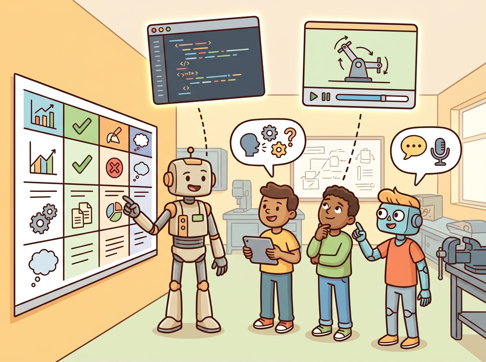

Section 60.6: Assessment, rubrics, and academic-integrity notes for code assignments
"I grade the artifact, the evidence, and the explanation, because copied code rarely survives questions."

Figure 60.6A: Assessment works better when rubric categories, runnable artifacts, replay evidence, and oral checks all point at the same student understanding.
A Rubric That Checks Understanding
Big Picture
Assessment, rubrics, and academic-integrity notes for code assignments gives Teaching with This Book a concrete systems role: grade task framing, evidence, implementation, failure analysis, and reflection separately. The section keeps asking what the agent observes, what it remembers or updates, which action changes, and what evidence would convince a skeptical reader.
Reader Pathway
Use this section to make assessment, rubrics, and academic-integrity notes for code assignments operational: identify the quantity or representation being carried, the interface that carries it through the embodied stack, and the failure evidence that would force a redesign.
What This Section Develops
This section develops the technical contract for assessment, rubrics, and academic-integrity notes for code assignments into a usable mental model. First we define the object of study, then we connect it to the agent loop, then we test it with a compact implementation.
The key question in Assessment, rubrics, and academic-integrity notes for code assignments is practical: what must the agent know, what can it observe, what action is available, and what evidence shows that the action worked under the stated conditions?
Figure 60.6A shows the intended grading surface: students should be evaluated through code, simulator evidence, reflection, and live explanation rather than through a single polished submission.
Action Is The Test
Rubrics and academic integrity should be judged by the action it improves. A section claim is strong when it names the decision, the measurement, and the failure mode before a larger model or simulator is introduced.
Theory
Formally, Assessment, rubrics, and academic-integrity notes for code assignments should be placed inside the closed-loop transition $o_t \rightarrow \hat s_t \rightarrow a_t \rightarrow o_{t+1}$. The important question is which variable, assumption, or constraint changes when this section's mechanism is added.
For Assessment, rubrics, and academic-integrity notes for code assignments, the practical design rule is to make the interface inspectable before optimization begins: inputs, outputs, units, latency, bounds, and failure labels should all be visible in the saved artifact.
Mechanism
The mechanism in Assessment, rubrics, and academic-integrity notes for code assignments is the contract between representation and action. Name what enters the module, what leaves it, which assumptions make that transformation valid, and which log would reveal a bad handoff.
Worked Example
For Assessment, rubrics, and academic-integrity notes for code assignments, keep one concrete rollout in view. A sensor reading becomes an estimate, the estimate constrains an action, the action changes the world, and the next observation confirms or contradicts the assumption. The section's idea is useful only if it improves that loop.
# Make the Assessment, rubrics, and academic-integrity notes for code assignments contract explicit
# before choosing a model.
# The fields name the decision, evidence, and failure case for one closed-loop test.
from dataclasses import dataclass, asdict
@dataclass
class SectionContract:
topic: str
decision: str
evidence: str
failure_case: str
def as_row(self) -> dict[str, object]:
return asdict(self)
contract = SectionContract(
topic="assessment_rubrics_and_academic_",
decision=(
"grade task framing, evidence, implementation, failure analysis, and reflection separately"
),
evidence=(
"use oral checks and artifact review so assistance tools support learning rather than hide"
"it"
),
failure_case="log the first rollout where the action no longer follows the evidence",
)
print(contract.as_row())
{'topic': 'assessment_rubrics_and_academic_', 'decision': 'grade task framing, evidence, implementation, failure analysis, and ', 'evidence': 'use oral checks and artifact review so assistance tools support lear', 'failure_case': 'log the first rollout where the action no longer follows the evidence'}
Code Fragment 1: The SectionContract record turns Assessment, rubrics, and academic-integrity notes for code assignments into a concrete closed-loop test. The decision, evidence, and failure_case fields force the reader to state what would change in the agent and how that change would be audited.
Library Shortcut
For Assessment, rubrics, and academic-integrity notes for code assignments, the small contract exists to expose the teaching artifact before tooling takes over. Use notebooks, simulators, shared logs, rubrics, and capstone studios only when they preserve the same observation, action, metric, and failure fields.
Practical Recipe
Write the observation, action, and success metric before choosing a model.
Build a baseline that is simple enough to debug by inspection.
Add the library implementation only after the baseline behavior is understood.
Record failures as structured cases: perception error, state error, planning error, control error, or evaluation error.
Run at least one perturbation test before trusting the result.
Common Failure Mode
The common mistake in Assessment, rubrics, and academic-integrity notes for code assignments is to trust a component score before checking the closed-loop interface. The failure usually appears where state, timing, authority, or evaluation context crosses a module boundary.
Practical Example
A team using Assessment, rubrics, and academic-integrity notes for code assignments starts by writing the task panel, not by picking the largest model. They keep a baseline run, a maintained-tool run, and a perturbation run in the same result folder. The comparison is accepted only when the action trace, metric, and failure labels come from one script.
Memory Hook
A good embodied system makes assessment, rubrics, and academic-integrity notes for code assignments visible twice: once in the design sketch and once in the replay artifact. The second view keeps the first one honest.
Research Frontier
For Assessment, rubrics, and academic-integrity notes for code assignments, the open research question is not whether a larger policy can produce a better demo. The sharper question is whether the method improves reliability across new scenes, new embodiments, delayed feedback, and rare failures under an evaluation protocol that another lab can reproduce.
Self Check
For Assessment, rubrics, and academic-integrity notes for code assignments, can you name the observation, action, protected assumption, success metric, and one likely failure case? If any field is vague, rewrite the contract before adding model complexity.
Topic-Native Deepening
Assessment design determines what students actually learn. In embodied AI, grading only a final score or a polished video pushes students toward opaque hacks, while grading the evidence trail pushes them toward reproducible systems thinking.
The section therefore separates task framing, implementation, evidence quality, failure analysis, and reflection. Academic integrity is handled through artifact transparency and oral or written explanation checks rather than through brittle suspicion alone.
Why This Section Matters
Assessment, rubrics, and academic-integrity notes for code assignments becomes teachable once the student can state the operative variables, the decision boundary, and the evidence artifact. The section should therefore be read together with Chapter 52 on evaluation and Chapter 59 on capstone deliverables, where the same loop is developed from adjacent angles.
Formal Object
A rubric can be written as $G = w_t T + w_i I + w_e E + w_f F + w_r R$, where $T$ is task framing, $I$ implementation, $E$ evidence quality, $F$ failure analysis, and $R$ reflection. Keeping the components separate prevents students from hiding weak understanding behind one high metric.
The failure-analysis term is especially important. Once it carries real weight, students gain incentive to document debugging clearly instead of treating errors as something to hide.
Algorithm: Grade embodied-AI assignments for understanding
Publish the rubric before the assignment starts, including evidence and reflection expectations.
Require one common artifact bundle: code, config, metrics, replay, and a failure note.
Sample oral or written spot checks that ask students to explain one design choice and one failure case.
Permit assistance tools with disclosure, while grading the student's understanding of the resulting system.
Penalize missing evidence and unexplainable code more heavily than modest performance gaps.
Recommended Rubric Components
Dimension
What To Specify
Why It Matters
Task framing
Clear contract, assumptions, and success definition
Shows whether the student understood the problem.
Implementation
Runnable code and correct interfaces
Checks engineering execution.
Evidence
Construct-matched metrics, replay, and logs
Rewards reproducibility and honesty.
Failure analysis
Specific diagnosis and next-step proposal
Builds research maturity.
def validate_rubric(payload: dict[str, object]) -> dict[str, object]:
assert payload, "payload must not be empty"
return payload
# Example weighted rubric card.
rubric = {
"task_framing": 0.20,
"implementation": 0.30,
"evidence": 0.25,
"failure_analysis": 0.15,
"reflection": 0.10,
}
print(validate_rubric(rubric))
Code Fragment 60.6.A summarizes the topic-specific evidence card for assessment, rubrics, and academic-integrity notes for code assignments.
The expected output should reveal assessment priorities immediately. A rubric with no explicit evidence or failure-analysis weight will teach the wrong habits.
Library Shortcut
After the from-scratch contract is clear, the practical route uses GitHub Classroom, nbgrader, Gradescope-style rubrics, Jupyter, replay exporters, CI. The payoff is that standard interfaces, logging, batching, and replay support move from ad hoc glue code into maintained infrastructure, while the evidence schema stays the same.
Project Or Teaching Use
A strong integrity policy allows disclosed use of coding assistants but requires students to defend the produced system. That shifts the course from policing text authorship to evaluating actual engineering understanding.
Research Frontier
The frontier question is how assessment changes when students can obtain increasingly capable generated code. Embodied AI may be unusually resilient here because replay, failure explanation, and system integration remain hard to fake convincingly.
Expected Output Interpretation
For Assessment, rubrics, and academic-integrity notes for code assignments, the artifact should show the course-design decision, the evidence students must produce, and the failure mode that would trigger a revised assignment or rubric.
Key Takeaway
Assessment, rubrics, and academic-integrity notes for code assignments matters when it changes an embodied agent's action under a stated observation and metric.
Grade task framing, evidence, implementation, failure analysis, and reflection separately.
Strong evidence is saved as one artifact containing the baseline, the maintained-tool path, the metric panel, and labeled failures.
Exercise 60.6.1
Design a method-matched experiment for Assessment, rubrics, and academic-integrity notes for code assignments. Specify the environment, observation schema, action interface, metric, and one perturbation that targets the section's core assumption.
Section References
Biggs, J. Teaching for Quality Learning at University. Open University Press, 1999.
Use for constructive alignment between learning outcomes, activities, and assessment.
Anderson, L. W. and Krathwohl, D. R. A Taxonomy for Learning, Teaching, and Assessing. Longman, 2001.
Use for designing assessments that move from recall to analysis, creation, and evaluation.
What's Next?
This closes Part XII. Continue into Appendix C for the tool catalog that supports the labs and capstones.